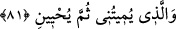

Süleymâ durumunu işitir de bir elçi/mektup gönderir diye
Eğer hâinler seni beni ziyâret etmekten men ediyorsa
Hasta ziyareti bahanesiyle yanıma gel
İşâret edilen İbrahim Halil’in gönlünün şifâsı şudur: Cebrail (a.s.) Hakk’ın fermanıyla
zaman zaman gelir ve: “Mevlân dün gece nasıldın diyor.” derdi. Halil (a.s.), hal
lisanıyla şu cevabı verirdi: “Senin bir defa olsun ‘Ey zamanın yorgunu, dün geceyi nasıl
geçirdin?’ demenden mutlu oldum.”
Hikâye edilir ki erenlerden birisi hastalandı, zayıf düştü ve yüzü sarardı. Kendisine:
“Senin için bir doktor çağıralım da şu hastalığını tedavi etsin mi?” dediler. Bunun
üzerine: “Zâten beni tabib hasta etti.” dedi. Ardından şu şiiri söyledi:
Nasıl tabîbime durumumu şikâyet ederim?
Başıma gelen bana tabîbimden ulaşmışken
81. Benim canımı alacak, sonra beni diriltecek O’dur.
Ecel/belirlenen müddet tamam olduktan sonra dünyada “Benim canımı alacak,
sonra” yaptıklarımın karşılığını vermek için âhirette “beni diriltecek O’dur.”
Âyette “sonra” kelimesi getirilmiştir. Çünkü dünyadaki can alma ile âhirette olacak
diriltme arasında belli bir zaman vardır.
Can alma Allah Teâlâ’ya nisbet edilmiştir. Çünkü ölüm kemâl ehli için ebedî hayata
kavuşma, türlü mihnet ve belâlardan kurtuluş olması bakımından hakikatte ilâhî
nimetlerdendir.
Büyük adamlar, âlemden göçmekten mutluyken,
Kalmaktan mutludur çocuklar
Kör kuş hoş suyu görmediğinden,
Acı su ona kevser görünür
İmam Sa’lebî şöyle demiştir: “Cenâb-ı Hak adâleti ile öldürür, fazlı ve ihsanıyla
diriltir.” Denilmiştir ki: “Allah’ın öldürmesi masiyet ile, diriltmesi tâat iledir. Ya da
öldürmesi cehalet ile, diriltmesi akıl iledir. Ya da öldürmesi tamah ile, diriltmesi vera’
iledir. Ya da öldürmesi firak/ayrılık ile, diriltmesi vuslat iledir.”
Sülemî, Hakâik’ta der ki: “Nefisten öldürür ve kendisi ile diriltir.” Bazı
muhakkıklara göre öldürme ve diriltme, havf ve recâ, gaflet ve zikir ya da istitâr ve
tecellîdir.” Bahr müellifi şöyle demiştir: “Beni beşeriyyet vasıflarından öldürür ve
rûhânî ahlâk ile diriltir. Tekrar rûhaniyyet vasıflarından öldürür, rabbâniyyet sıfatları ile